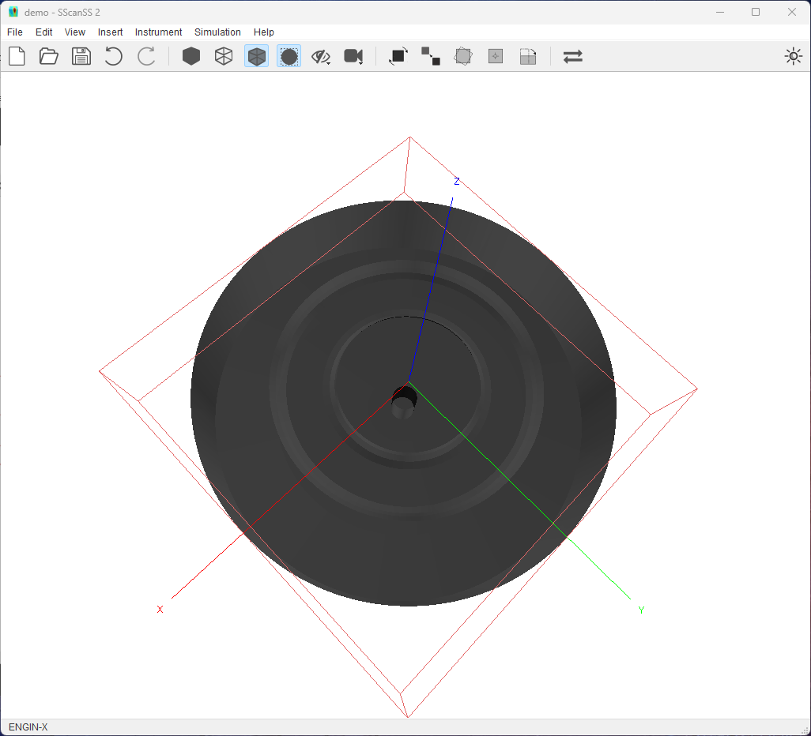

Scene Management¶
The graphics window is the main window in SScanSS 2 and is essential for visualizing many operations. The graphics window will render one of two scenes: the first showing the sample preparation “Sample Scene” and the second the instrument “Instrument Scene”.
Toggle scene¶
SScanSS 2 will switch to the most appropriate scene for the current operation. To switch between scenes manually use the
shortcut Ctrl + T or click the  button in the toolbar
button in the toolbar
{kind=link}
Change sample appearance¶
The sample colour can be changed from the preference dialog.The sample shading can be changed to the following:
Solid: The sample is rendered as a solid object. Click View > Solid to activate or the icon from the toolbar.
Wireframe: Only the edges of the triangles that make up the sample mesh are drawn. Click View > Wireframe to activate or the icon from the toolbar.
Transparent (default): This is useful to view the internal structure of the sample. Click View > Transparent to activate or the icon from the toolbar.
{kind=link}
{kind=link}
{kind=link}
Note
This action is global i.e. it is applied in all scenes so the sample will always be rendered using the active shading style irrespective of the scene or the operation.
Sample bounding box¶
The sample bounding box can be hidden or shown by clicking the Toggle Bounding Box in the View menu or the toolbar button. The sample bounding box will be rendered with a dotted red line in the 3D scene. The bounding box is a cuboid whose faces are each perpendicular to one of the axis of the coordinate system. The sample bounding box can be used to visualize how the sample relates to the coordinate system when the coordinate system is off-screen. This action is global so showing the sample bounding box in the sample scene will render it in the instrument scene.
{kind=link}
{kind=link}
Hide and show items¶
The 3D models representing the fiducials, measurements, vectors and the coordinate frame can be hidden or shown by clicking the appropriate toggle in the View menu or the toolbar menu. This could useful when the scene is cluttered by too many items. This action is global so hiding fiducials in the sample scene will hide them in the instrument scene.
{kind=link}